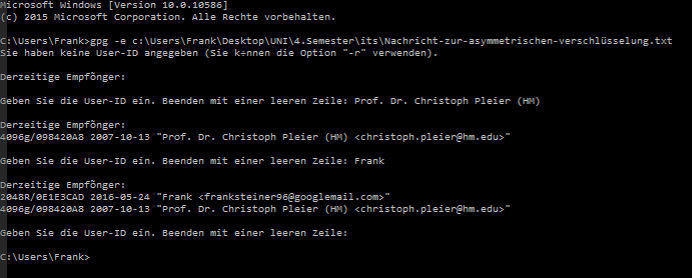

- Zuerst erstellen wir eine Textdatei, welche wir verschlüsseln wollen
Diese Datei hat folgenden Inhalt:
"Diese nachricht soll assymetrisch verschlüsselt werden.!!!!"
Und Speichern sie als "Nachricht-zur-asymmetrischen-verschlüsselung.txt", in "C:\Users\Frank\Desktop\UNI\4.Semester\its" ab.
- Um diese Datei âsymmetrisch zu Verschlüsseln, geben wir nun
gpg -e c:\Users\Frank\Desktop\UNI\4.Semester\its\Nachricht-zur-asymmetrischen-verschlüsselung.txt
in der console ein.
- Als nächstes müssen wir die User-ID (den Namen) der Empfänger eingeben und es wird eine Verschlüsselte Datei erzeugt. (die Unverschlüsselte bleibt ebenfalls erhalten)


- Um die Nachricht wieder zu entschlüssel verwebdeb wird folgender Befahl verwendet
gpg -d c:\Users\Frank\Desktop\UNI\4.Semester\its\Nachricht-zur-asymmetrischen-verschlüsselung.txt.gpg.
Zum entschlüsseln müssen wir dann wieder unser Passwort eingegeben und bei erfolgreicher eingabe wird der Inhalt der Datei auf der Konsole ausgegeben.